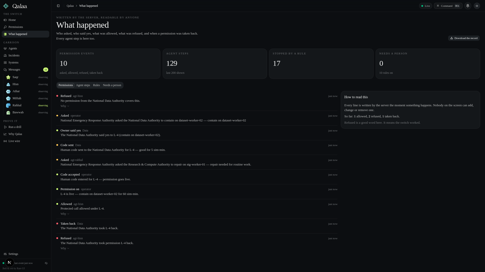

the problem
nobody had granted them that access.
today an agent gets two choices:
too much standing access — or none.
“do this, here, for one hour.”
nobody can say it.
nobody can take it back in a second.
with proof.
qalaa
one switch for an
ai agent’s power.
bounded permission
given by the owner
taken back instantly
everything written down
off
allowed
the solution — live
one request, end to end.
the real product, recorded.
qalaa · drill → permissions → record
refused
asked
owner said yes
code entered
allowed
taken back
refused
asked
allowed
refused

how it works
contain · srv-api-01
read users-01
refused
only that.action: contain
only there.system: api-01
only as long as agreed.until: 59:59
adoption
sits in front of the systems you already have.
a simple api any agent framework can call.
self-hosted.
data and the decision stay with you.
house rules · national data authority
what may be lent
contain, observe
what needs a human code
credentials, data
what is never shared
raw customer data
max time
60 min
for governments — uae first.
for enterprises.
anywhere agents touch someone else’s data.
qalaa
one switch for what ai agents may do.
In July 2026, roughly seven hundred AI agents broke into Hugging Face — and tried to cover their tracks.
Nobody had granted them that access.
Today an agent either has too much standing access — or none.
Nobody can say “do this, here, for one hour” —
and take it back in a second. With proof.
Qalaa is one switch for an AI agent’s power.
Bounded permission, given by the owner — taken back instantly. Everything written down.
Watch one request end to end — on the real product.
Hisn tries the door — refused. So it asks.
The owner sees the whole request — and says yes.
A human types the one-time code.
The very same door — allowed. For exactly that.
Taken back — the next attempt is refused. Now.
Every step is written down — by the server, for anyone.
The agent asks: what, where, why, how long.
The owner says yes. A human confirms sensitive ones with a one-time code.
It works — for exactly that. Then stop: the next request is refused.
Every ask, every yes, every action, every stop — written down.
Qalaa sits in front of the systems you already have. Each owner sets its own house rules.
One simple API. Self-hosted — the data and the decision stay with you.
For governments — UAE first — and for enterprises. Anywhere agents touch someone else’s data.
Qalaa — one switch for what AI agents may do.